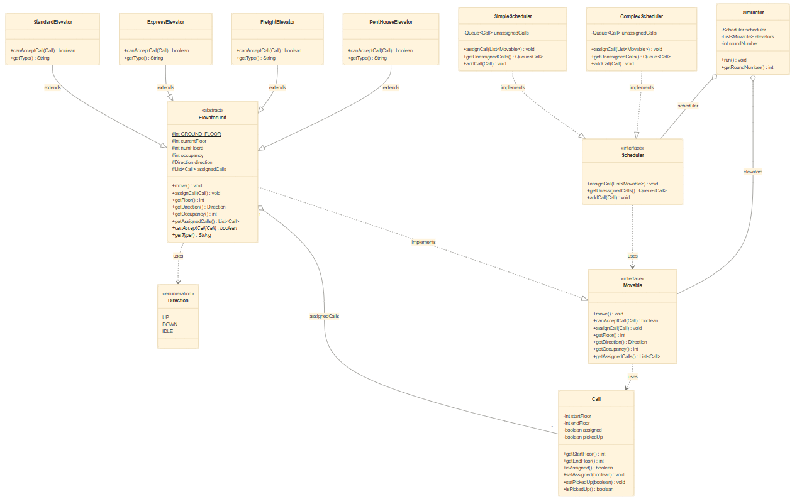

This write-up overviews the implementation of Java based elevator system implemented with object oriented programming techniques, test driven development, and repository based team collaboration.

Overview
The Elevator Simulator is a Java application that models how a real building's elevator system operates. The program different kinds of elevators with different rules for which floors to visit and which passengers to pick up. A scheduler decides which elevator should answer each call, and a simulator runs the entire process round after round until every passenger has been serviced and all elevators have returned to the ground floor.
The goal of this project was to practice planning and building software on a larger scale, first by designing, then writing tests, then implementing code. We also maintained best practices of keeping code clean and modular while collaborating as a team and providing one another with feedback by branching then submitting and vetting pull requests. This project provided us with direct experience following the four pillars SOLID principles of OOP in a complex system.
Functional requirements
The simulator class accepts a several command-line inputs: the number of floors in the building, the type of scheduler to use, how many of each elevator type to create, and a file containing the list of passenger calls. It subsequently creates the building, loads the calls, and runs the simulation.
There are four elevator types with differing behaviors. The Standard Elevator visits any floor and accepts new calls that enable it to continue traveling in its current direction. The Freight Elevator services every floor but only carries one passenger at a time. The Pent House Elevator is only accessible to the ground and top floors. The Express Elevator handles the top half of the building and the ground floor by skipping everything in between.
There are two different scheduling strategies. The Simple Scheduler checks elevators from left to right and assigns the call to the first one that can accept it. The Complex Scheduler is more sophisticated and answers calls by evaluating all elevators that could handle the call and assigning the call to whichever one is closest to the pickup floor.
The scheduler can only assign one call each round, then every elevator moves one floor or remains stationary to pick up passengers, drop off passengers, or change directions. The simulation prints the full state of every elevator and any unanswered calls after each round. The simulation ends once all calls are completed and every elevator is back on the ground floor.
Design
We designed the system around two key interfaces Movable and Scheduler so that the simulator never needs to know which specific elevator or scheduler it is working with. This makes our architecture flexible and easy to extend. Our design incorporates all four OOP pillars and several SOLID principles.
The Movable and Scheduler interfaces define what elevators and schedulers can do without revealing how they do it. The Simulator only interacts through these interfaces.
All four elevator types extend the ElevatorUnit class, which holds the movement logic, floor tracking, pickup/dropoff behavior, and return-to-ground behavior for all types of elevators.
Fields like currentFloor, occupancy, and assignedCalls are protected or private. The other classes interact via public methods and never directly impact an internal state.
The Simulator holds a List<Movable> and a Scheduler reference. When the simulator runs, the correct canAcceptCall() and assignCall() behavior takes place based on the type of object.
The design also follows several SOLID principles. The Single Responsibility Principle is reflected in each class having one clear job: Call stores call data, ElevatorUnit handles movement, and the different subclasses defines their own acceptance behaviors while the Simulator manages the rounds. The Open/Closed Principle applies because adding a new elevator type only requires creating a new subclass and overriding canAcceptCall() so that no existing code needs to change. The Liskov Substitution Principle holds because any ElevatorUnit subclass can replace another wherever a Movable is expected. The Dependency Inversion Principle is visible in the Simulator depending on the Movable and Scheduler interfaces rather than concrete classes.
Key assumption: We decided that the Express Elevator defines "top half" as any floor strictly above numFloors / 2 (integer division). For a 10-floor building, that means floors 6–10 and the ground floor are valid. We chose this interpretation because it cleanly divides the building and avoids confusion about the middle floor. An alternative would have been to include the middle floor, but excluding it keeps the express elevator's zone clearly separated from the standard elevator's zone, which makes scheduling decisions predictable.
Another assumption we made was that when an elevator is returning to the ground floor with no calls, it should not accept new calls that require changing direction. This keeps the behavior predictable and avoids situations where an elevator would ping-pong between floors endlessly. The Pent House Elevator and Freight Elevator are exceptions because they can change direction when empty. We decided that was ok because their limited floor access and single-passenger rule already decreases the amonut of available calls they can service.
Implementation
I was responsible for implementing three classes: the ExpressElevator, the PentHouseElevator, and the Simulator.
isStartValid and isEndValid and handled the occupied versus empty cases separately. When the elevator has passengers, it behaves like a standard elevator within its valid zone. When the elevator is empty, it is more flexible and will change direction to answer a call.
isValidPentHouseFloor() and isGroundOrTopFloor() to make the conditional logic easy to understand. The elevator only accepts a call if both floors in the call are within valid zones and the elevator is completely empty with no pending calls.
run() clean by implementing helpers: isSimulationComplete() checks if all calls are done and elevators are home, moveAllElevators() iterates through the list, and printRound() formats the output. The main method parses all seven arguments and delegates construction to factory-style static methods like createScheduler() and createElevators().
Throughout the project, we followed test-driven development. For each class I implemented, I wrote the unit tests first, let them fail, then wrote the minimum code to make them pass. Each commit represented one test and its subsequent implementation. We used branches for every class, opened pull requests for review, and gave each other comments prior to merging. I requested changes on my partner's pull requests around edge cases for direction handling, and they caught a boundary condition in my Express Elevator logic during their review.
Reflection
This project taught me how much easier implementation becomes when you invest time in design upfront. Having a clear UML diagram and understanding the relationships between classes before writing code minimized the amount of refactoring I had to do after initial implementation. It also made dividing work with my partners easier because the interfaces established clear boundaries.
Test-driven development felt slow at first, but it was helpful. Writing tests first forced me to think about what each method should actually do before writing it, and it prevented logic bugs. I was more confident in our final product / code at the end because every class is backed by a test.
Working with pull requests and code reviews was also helpful. Getting feedback from my partners improved my code quality, and reviewing their code helped me understand parts of the system I did not build. Our code reviews made working as a team more seamless and enforced clear communication through commit messages, PR descriptions, and review comments.